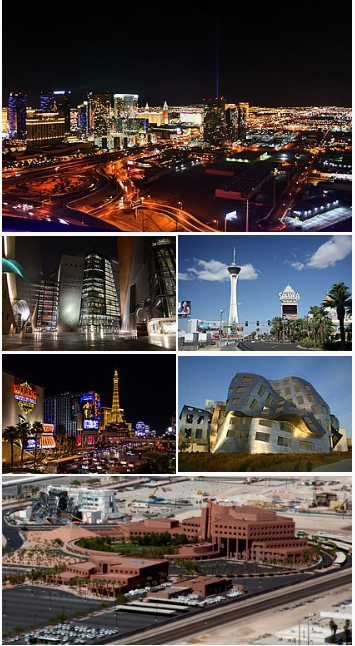

Las Vegas , often known simply as Vegas, is the 25th-most populous city in the United States, the most populous city in the state of Nevada, and the county seat of Clark County. The city anchors the Las Vegas Valley metropolitan area and is the largest city within the greater Mojave Desert.[6] Las Vegas is an internationally renowned major resort city, known primarily for its gambling, shopping, fine dining, entertainment, and nightlife. The Las Vegas Valley as a whole serves as the leading financial, commercial, and cultural center for Nevada. The city bills itself as The Entertainment Capital of the World, and is famous for its luxurious and extremely large casino-hotels together with their associated activities. It is a top three destination in the United States for business conventions and a global leader in the hospitality industry, claiming more AAA Five Diamond hotels than any other city in the world.[7][8][9] Today, Las Vegas annually ranks as one of the world's most visited tourist destinations.[10][11] The city's tolerance for numerous forms of adult entertainment earned it the title of "Sin City",[12] and has made Las Vegas a popular setting for literature, films, television programs, and music videos. Las Vegas was settled in 1905 and officially incorporated in 1911. At the close of the 20th century, it was the most populated North American city founded within that century (a similar distinction was earned by Chicago in the 19th century). Population growth has accelerated since the 1960s, and between 1990 and 2000 the population nearly doubled, increasing by 85.2%. Rapid growth has continued into the 21st century, and according to the United States Census Bureau, the city had 641,903 residents in 2020,[13] with a metropolitan population of 2,227,053.[14] As with most major metropolitan areas, the name of the primary city ("Las Vegas" in this case) is often used to describe areas beyond official city limits. In the case of Las Vegas, this especially applies to the areas on and near the Las Vegas Strip, which are actually located within the unincorporated communities of Paradise and Winchester.[15][16] Nevada is the driest state, and Las Vegas is the driest major U.S. city. Over time and influenced by climate change, droughts in Southern Nevada have been increasing in frequency and severity,[17] putting a further strain on Las Vegas' water security.